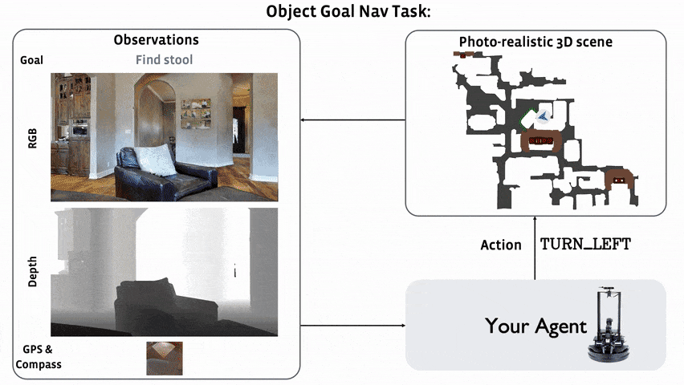

Object Navigation Task
|  |
ObjectNav is defined as the task of navigating to an object, specified by its label, in an unexplored environment. In particular, the agent is initialized at a random location and pose in an environment and asked to find an instance of an object category, e.g., find a chair, by navigating to it. |